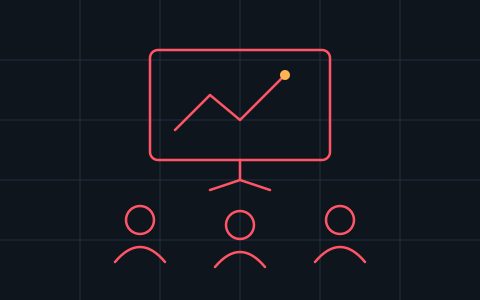
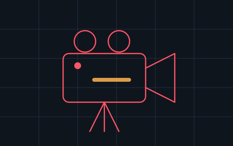

Schulung von Prüforganisationen
Schulungen für Prüforganisationen rund um Fahrzeugdiagnose im Volkswagen-Konzern.
- Zielgruppe: Prüforganisationen
- Thema: Fahrzeugdiagnose im Volkswagen-Konzern
- Aus Datenschutzgründen ohne Namensnennung
Referenzen
Eine Auswahl von Aufträgen und Tätigkeiten, bei denen ich mein Wissen rund um Fahrzeugdiagnose im Volkswagen-Konzern einbringen durfte.
Ausgewählte Aufträge, bei denen ich als Trainer oder Experte für Fahrzeugdiagnose im Volkswagen-Konzern gefragt war.

Schulungen für Prüforganisationen rund um Fahrzeugdiagnose im Volkswagen-Konzern.

Mitwirkung als Experte in einer Reportage im Fernsehen.
Neben einzelnen Aufträgen bringe ich mein Wissen dauerhaft in Support- und Schulungsstrukturen rund um VCDS ein.
Konzeption und Aufbau des neuen Schulungsprogramms von Auto-Intern bzw. vcds.de — inklusive dedizierter SFD-Schulungen.
vcds.de ansehenAufbau und Modernisierung des Supports bei Auto-Intern, dem offiziellen Ross-Tech-Distributor für Deutschland — inklusive wiki.vcds.de und forum.vcds.de.
auto-intern.de ansehenAnsprechpartner für die SFD-Freischaltung in Verbindung mit VCDS auf sfd.vcds.de.
sfd.vcds.de ansehenEigenes Kleingewerbe für Fahrzeug-Codierungen und Diagnosedienstleistungen für Fahrzeuge des Volkswagen-Konzerns.
lhnext.de ansehenOb Schulung für Ihr Team, Unterstützung bei einer schwierigen Diagnose oder fachliche Einschätzung für ein Medienprojekt — schildern Sie kurz Ihr Anliegen.